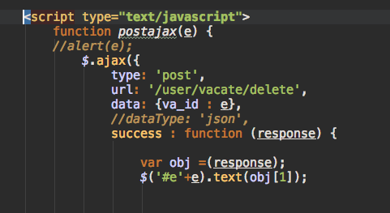
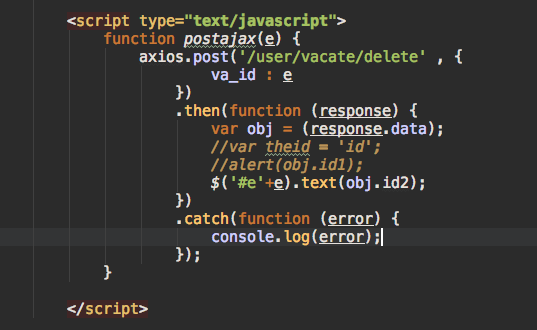

axios
使用
直接加入cdn：
<script src="https://unpkg.com/axios/dist/axios.min.js"></script>
与$.ajax的比较


bug
ci与axios使用会触发一个致命的bug，是php5.6引起的。
具体为ci中$this->input->post接收axios.post会取不到值，网上解决方法用
json_decode(trim(file_get_contents(‘php://input’)), true);
虽然取到值了，但是返回给前端的json却带有warning，无法用js取到返回的指定的值。
补上面留下的坑，可以把warning去掉233。。js可以抓取指定的值
首先：
打开php.ini文件
添加这个配置:always_populate_raw_post_data = -1
或者添加这个:enable_post_data_reading = On(官方推荐这个)
其次：
php和web服务器都要重启！！！都要重启！！！都要重启！！！（我改完后只是重启php，没有重启apache，༼ ༎ຶ ෴ ༎ຶ༽）